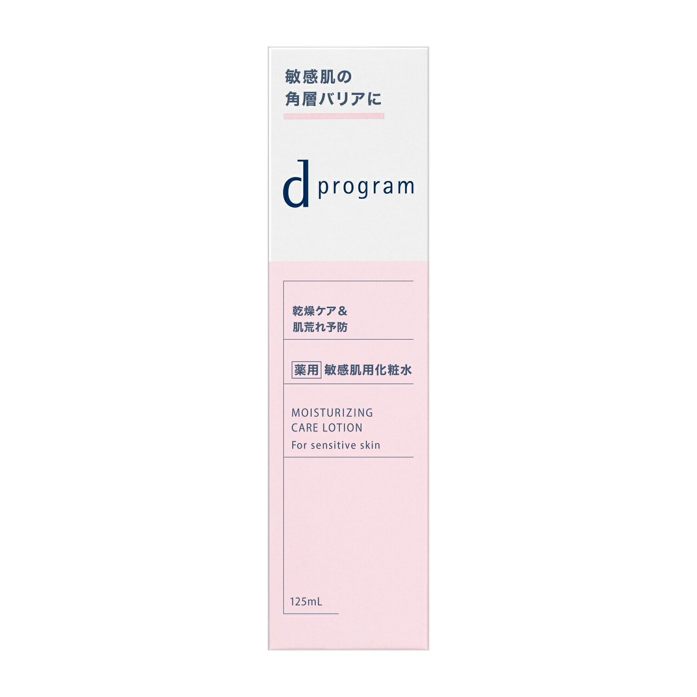
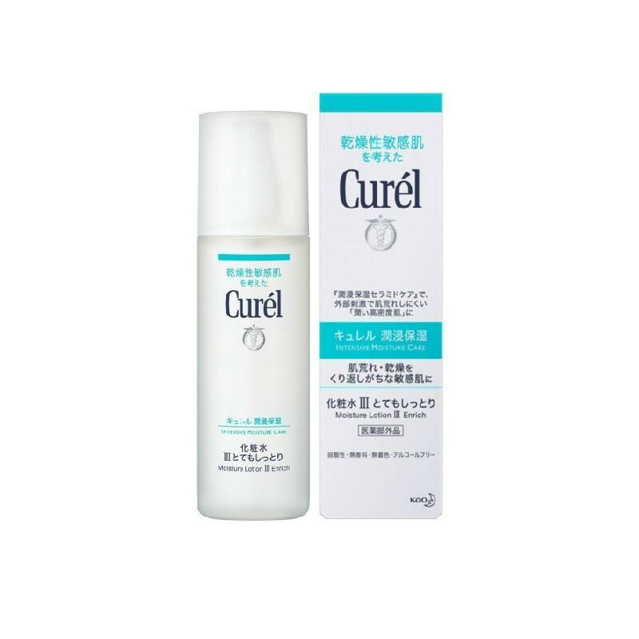
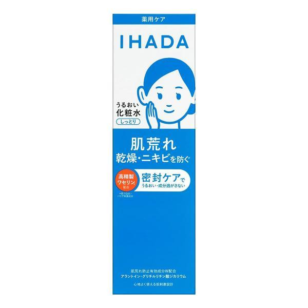
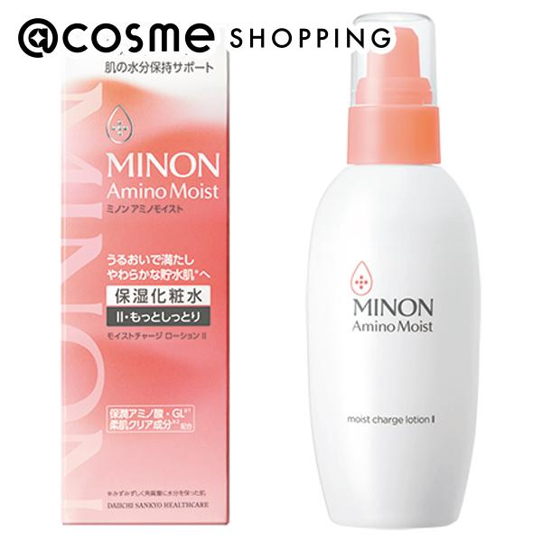
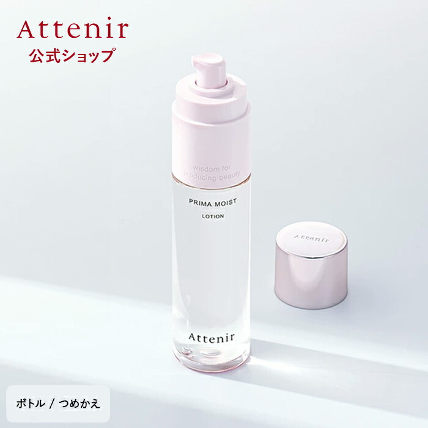

使用感から選ぶ
朝は軽さ、夜はしっとり感など、生活に合わせて選びます。
DRY SKIN TONER EDIT
医薬部外品、しっとり感、容量、アルコール無添加表示を比較。化粧水だけで完結させず、乳液やクリームまで含めて保湿します。
HOW TO CHOOSE
乾燥肌の化粧水は、しっとり感だけで決めず、その後の保湿まで考えます。
朝は軽さ、夜はしっとり感など、生活に合わせて選びます。
医薬部外品、無添加表示、レフィルの有無を比較します。
乳液やクリームと組み合わせ、うるおいを保つ設計へ。
SKIN CONCERN
季節や空調で揺らぎやすい30代の肌。しっとり感だけでなく、刺激になりにくい表示や、その後に重ねる乳液・クリームまで考えます。
今の肌を知ることが、選び方の第一歩です。AFTER THE EDIT
朝晩の使いやすさ、容量、医薬部外品や無添加表示を整理。今の肌と生活に無理なくなじむ化粧水を選びます。
触れたくなるような、しなやかな肌へ。QUICK COMPARISON
| 商品 | 容量 | 参考価格 | タイプ | 選び方 |
|---|---|---|---|---|
| dプログラム モイストケア ローション MB | 125mL | 販売ページで確認 | 医薬部外品 | 乾燥と肌荒れを防ぎたい |
| キュレル 潤浸保湿 化粧水 III | 150mL | 販売ページで確認 | 医薬部外品 | とてもしっとりを選びたい |
| イハダ 薬用ローション とてもしっとり | 180mL | 販売ページで確認 | 医薬部外品 | ワセリン配合で選びたい |
| ミノン モイストチャージ ローション II | 150mL | 販売ページで確認 | 化粧品 | とろみのある化粧水が好き |
| アテニア プリマモイスト ローション | 150mL | 販売ページで確認 | 化粧品 | 30代の乾燥ケアで選びたい |
PRODUCT NOTES

しっとりした使用感の敏感肌向け薬用化粧水。2プッシュを手でなじませる案内です。

消炎有効成分アラントイン配合。弱酸性、無香料、無着色、アルコールフリー表示です。

高精製ワセリンと2つの肌荒れ防止有効成分を配合した、とてもしっとりタイプです。

もっとしっとりタイプ。無香料・無着色・弱酸性・アルコール無添加表示です。

角層をうるおいで満たし、なめらかに整える保湿化粧水。アルコールフリー表示です。
EDITOR'S ASP PICK
化粧水だけでなく、洗顔料や保湿液まで同じラインで使い心地を確かめたい方へ。オルビスユーの7日間体験セットなら、いきなり本品をそろえる前に毎日のケアへ取り入れやすいか確認できます。
公式の7日間体験セットを確認 → PR・初回限定。セット内容、価格、適用条件は申込画面で最新情報をご確認ください。